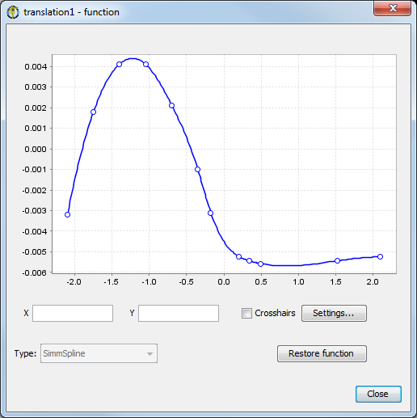
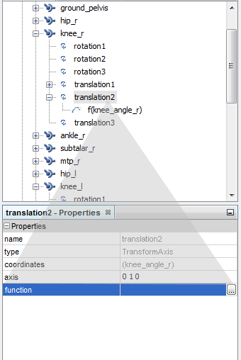
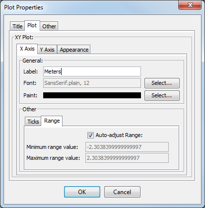

The Function Editor allows you to view and modify the parameters of a model that are functions, such as the force-length curve of a muscle or a joint constraint function. The functions are defined using control points and a function type. You can add, delete, and move control points if the function is defined by a set of control points, for other types of functions, the function editor displays the textual attributes of the function only for editing (e.g. constant function is displayed a s text field representing the value, while a linear function displays the slope and intercept). The topics covered in this chapter are:
Opening the Function Editor
|  | The Function Editor window is opened by locating the function you want to modify and choosing the edit option (e.g. knee_r Joint translation in gait2354 model). This will open the Function Editor window and load the function into it. Once the window is open, you cannot select another function to edit from within the Function Editor window. You must close the window, locate the other function in the Navigator or other model editing tool and choose the edit option for that function. Doing so will close the function that is currently in the Function Editor (saving all changes), and will load the new function. |
|---|
Opening the Editor for a Joint Constraint Function
To edit a joint constraint function associated with a degree of freedom (DOF) follow the steps below. In this example, the translation1 DOF (the X translation) in the femoral-tibial joint is a function of the coordinate r_knee_angle. Right-clicking on the coordinate name brings up a drop-down menu. Choosing "…" next to the function property in the "Properties window" allows you to load the function into the Function Editor.
|  |
|
|---|
Opening the Editor for Muscle Property Functions
To edit the force-length curve or other property functions of a muscle, first load the muscle into the Muscle Editor. In the Muscle Editor, click on the ... button next to the function property to load the function into the Function Editor.
Opening the Editor for Moving Muscle Points
To edit the functions that define the movement of moving muscle points, first load the muscle into the Muscle Editor. Then, click on the Attachments tab to display the list of the muscle's attachment points. For moving muscle points, the XYZ columns will contain Edit buttons. Click on one to load that component's function into the Function Editor.
Restoring
When you modify a function in the Function Editor, the modification occurs immediately to the function stored in the model. You do not need to apply the change to make it happen, nor can you cancel the change before it takes effect. To allow you to undo changes made to a function, there is one "restore function" buttons at the bottom of the Function Editor window that undoes all the changes made to the function by the function editor. When you first load a function into the Function Editor, a backup copy of it is made, so you can restore it without having to back it up first.
Editing Control Points
Controls points are used to define the shape of some functions. The following operations are possible when working with control points:
select: To select a control point, use ctrl+left mouse on the point. To select multiple points, use ctrl+shift+left mouse on the points. You can also "box select" points by holding down the ctrl+left mouse button and dragging the cursor to form the selection box. You can also hold down the shift key while box selecting to select multiple sets of control points. Selected control points are displayed in yellow.
add: To add a control point to the function, put the cursor where you would like to add the point and press the right mouse button. Choose Add control point from the drop down menu that appears, and a new point will be added to the function.
delete: To delete a control point, put the cursor over the point and press the right mouse button. Choose Delete control point from the drop down menu.
duplicate point: To duplicate a control point, put the cursor over the point you would like to duplicate, and press the right mouse button. Choose Duplicate control point from the drop down menu. A very small offset will be added to the point in the X direction, so that it is not exactly coincident with the chosen point. This is done because many types of functions require the control points to be monotonically increasing in the X direction.
move point: Select one or more control points. Then, put the cursor over any of the selected points and press the left mouse button. While holding the button down, drag the set of points within the plot area. You cannot move the points over one of the adjacent points (i.e., the points in the X direction must always be monotonically increasing).
While you are dragging control points, crosshairs are displayed along with the XY coordinates of the control point under the cursor. Because the displayed coordinates are for the control point, not the actual location of the tip of the cursor, they can help you more accurately position the control point while dragging.
To more precisely move a control point, you can select it and then type its XY coordinates into the X and Y number fields below the plot area. When there are multiple points selected, you can type in a Y value to set all selected points to that value, but you cannot set the X value (because that would create coincident points).
Zooming in the Plot Area
The plot area that displays the function and its control points normally auto-scales to show all of the points. However, if you want to pan or zoom the view to focus on a particular area, there are several ways you can do this.
- Select a rectangular area – To select a rectangular area to zoom in on, press the left mouse button at the upper-left corner of the rectangle, and hold it down while sweeping down (dragging) to the lower-right corner. When you release the left mouse button, the rectangle you defined will be expanded to fit the entire plot area.
- Hot keys – Press the i and o keys to zoom the view in or out, respectively. The zooming is centered on the current cursor location. To pan the view of the function, use the l, r, u, and d keys to move it left, right, up, and down, respectively.
- Dialog box– For more precise control over the zooming of the plot, click on the Properties button at the bottom of the Function Editor. In the dialog box for Plot Properties that appears, click on the Plot tab and then on either the X Axis or the Y Axis tab. In the lower panel labeled Other, click on the Range tab to display the minimum and maximum values for the axis. Turn off the Auto-adjust Range checkbox if it is not already off, and then enter the exact minimum and maximum values you would like to use for that axis.
Plot Properties
The Plot Properties dialog box gives you access to many properties for plotting the function. Shown here are the minimum and maximum values for the Y axis. To make the Function Editor auto-scale the Y axis to display all of the control points, turn on the Auto-adjust Range checkbox.
|  |
|
|---|
{kind=link}
{kind=link}
{kind=link}